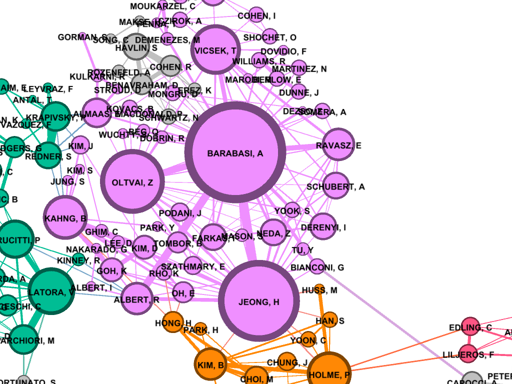

<!-- TODO add slide numbers & maybe slide name --> ### Hands on Network Machine Learning  Eric W. Bridgeford and Jaewon Chung<br> For questions, reach out to [ericwb95@gmail.com](mailto:ericwb95 at gmail dot com) or [j1c@jhu.edu](mailto:j1c at jhu dot edu) Follow the slides: [ericwb.me/lectures/intro_graph_ML.html](ericwb.me/lectures/intro_graph_ML.html) --- name:talk ### Outline - [Basics of Network Data](#graphs) - [Random Network Models](#models) - [Estimating Parameters for Networks](#est) - [Applications](#est) ### [Graph Neural Networks](#extra) --- name:whyhave ### Outline - Basics of Network Data - Why do we use statistics? - [What is a network?](#graphs) - [What different types of networks are there?](#types) - [Random Network Models](#models) - [Estimating Parameters for Networks](#est) - [Applications](#est) ### [Graph Neural Networks](#extra) --- ### What is the traditional framework for learning in science? - Most data tends to be in a ubiquitous format: $n$ observations with $d$ features/dimensions - We have lots of algorithms that allow us to learn from this data across different languages - $\texttt{sklearn}$ in $\texttt{python}$, $\texttt{keras}$ in $\texttt{R}$, etc. <br> <br> <br> | Person | Biological Sex | Height | Age | | --- | --- | --- | --- | | Person $1$ | Male | $5'9"$ | $28$ | | Person $2$ | Female | $5'5"$ | $24$ | | ... | ... | ... | ... | --- ### What is the traditional framework for learning in science? - Most data tends to be in a ubiquitous format: $n$ observations with $d$ features/dimensions - We have lots of algorithms that allow us to learn from this data across different languages - $\texttt{sklearn}$ in $\texttt{python}$, $\texttt{keras}$ in $\texttt{R}$, etc. - Devise techniques that allow us to calculate useful quantities about each .ye[observation] | Person | Biological Sex | Height | Age | | --- | --- | --- | --- | | Person $1$ | Male | $5'9"$ | $28$ | | Person $2$ | Female | $5'5"$ | $24$ | | ... | ... | ... | ... | --- ### Coin flip example - Coin flip experiment: have a coin with probability of landing on heads of $p$ - .ye[Question]: If I flip the coin $15$ times and it lands on heads $6$, can you estimate the probability of landing on heads? - Anybody? Why is it what it is? --- ### Coin flip example - Coin flip experiment: have a coin with probability of landing on heads of $p$ - Question: If I flip the coin $15$ times and it lands on heads $6$, can you estimate the probability of landing on heads? - .ye[Intuitive answer]: $\frac{6}{15}$ --- ### Coin flip example - Coin flip experiment: have a coin with probability of landing on heads of $p$ - Question: If I flip the coin $15$ times and it lands on heads $6$, can you estimate the probability of landing on heads? ##### Rigorous answer $\mathbf{x}_i \sim \text{Bern}(p)$ $i.i.d$ heads (value $1$) and tails (value $0$) --- ### Coin flip example - Coin flip experiment: have a coin with probability of landing on heads of $p$ - Question: If I flip the coin $15$ times and it lands on heads $6$, can you estimate the probability of landing on heads? ##### Rigorous answer $\mathbf{x}_i \sim \text{Bern}(p)$ $i.i.d$ heads (value $1$) and tails (value $0$) $\mathcal L (x\_1, ..., x\_{15}) = \prod\_{i = 1}^{15} p^{x\_i}(1 - p)^{x\_i}$ --- ### Coin flip example - Coin flip experiment: have a coin with probability of landing on heads of $p$ - Question: If I flip the coin $15$ times and it lands on heads $6$, can you estimate the probability of landing on heads? ##### Rigorous answer $\mathbf{x}_i \sim \text{Bern}(p)$ $i.i.d$ heads (value $1$) and tails (value $0$) $\mathcal L (x\_1, ..., x\_{15}) = \prod\_{i = 1}^{15} p^{x\_i}(1 - p)^{x\_i}$ take derivative of $\\ell = \\log(\\mathcal L)$ and set equal to zero $\Rightarrow \hat p = \frac{\sum\_{i = 1}^{15}x\_i}{15}$ is the MLE --- ### Coin flip example - Coin flip experiment: have a coin with probability of landing on heads of $p$ - Question: If I flip the coin $15$ times and it lands on heads $6$, can you estimate the probability of landing on heads? ##### Rigorous answer $\mathbf{x}_i \sim \text{Bern}(p)$ $i.i.d$ heads (value $1$) and tails (value $0$) $\mathcal L (x\_1, ..., x\_{15}) = \prod\_{i = 1}^{15} p^{x\_i}(1 - p)^{x\_i}$ take derivative of $\\ell = \\log(\\mathcal L)$ and set equal to zero $\Rightarrow \hat p = \frac{\sum\_{i = 1}^{15}x\_i}{15}$ is the MLE check that we found a maximum (second derivative, check extrema) --- ### Coin flip example - Coin flip experiment: have a coin with probability of landing on heads of $p$ - Question: If I flip the coin $15$ times and it lands on heads $6$, can you estimate the probability of landing on heads? - Intuitive and rigorous answers align - Statistics allows us to be rigorous about things we find intuitive --- ### Coin flip example - Coin flip experiment: have a coin with probability of landing on heads of $p$ - Question: If I flip the coin $15$ times and it lands on heads $6$, can you estimate the probability of landing on heads? - Intuitive and rigorous answers align - Statistics allows us to be rigorous about things we find intuitive - Statistics can also allow us to be rigorous about things that are more complicated or unintuitive --- name:graphs ### Outline - Basics of Network Data - [Why do we use statistics?](#whyhave) - What is a network? - [What different types of networks are there?](#types) - [Random Network Models](#models) - [Estimating Parameters for Networks](#est) - [Applications](#est) ### [Graph Neural Networks](#extra) --- ### What is a network? - Network/Graph $G = (\mathcal V, \mathcal E)$ - $\mathcal V$ are nodes/vertices - $\mathcal E$ are edges: connect one node/vertex to another <center></center> --- ### Layout plots - Provide a visualization of the nodes and edges in the network in some arbitrary space <center></center> --- ### Adjacency matrices - $A$ is an $n \\times n$ .ye[adjacency matrix] for a network with $n$ nodes $$\\begin{aligned} a\_{ij} = \\begin{cases}1, & e\_{ij} \in \mathcal E \\\\ 0, & e\_{ij} \not\in \mathcal E\end{cases} \\end{aligned}$$ - The .ye[incident nodes] of an adjacency $a\_{ij}$ are $i$ and $j$ <center></center> --- ### Adjacency matrices - $A$ is an $n \\times n$ .ye[adjacency matrix] for a network with $n$ nodes $$\\begin{aligned} a\_{ij} = \\begin{cases}1, & e\_{ij} \in \mathcal E \\\\ 0, & e\_{ij} \not\in \mathcal E\end{cases} \\end{aligned}$$ - if $a\_{ij} = 1$, nodes $i$ and $j$ are .ye[neighbors] (edge between them) <center></center> --- ### Paths describe .ye[edges of travel] from one node to the next - Path from $i$ to $j$: sequence of edges $e\_{i'j'}$ from node $i$ and ending at node $j$ - What's a path from Staten Island (SI) to Bronx (BX)? <center></center> --- ### Two paths from SI to BX <br> <br> <center></center> --- name:types ### Outline - Basics of Network Data - [Why do we use statistics?](#whyhave) - [What is a network?](#graphs) - What different types of networks are there? - [Random Network Models](#models) - [Estimating Parameters for Networks](#est) - [Applications](#est) ### [Graph Neural Networks](#extra) --- ### Directed networks - Edges aren't necessarily "symmetric" - The lanes of the Brooklyn bridge are out from BK to MH - There is an edge from MH to BK, but there is no edge from BK to MH - .ye[asymmetric] adjacency matrix <center></center> --- ### Networks with self-loops - .ye[self-loops] allow nodes to connect back to themselves - A bridge from a point in SI to another point within SI (crossing a creek?) - .ye[non-hollow] adjacency matrix <center></center> --- ### Networks with weights - For every edge, a .ye[weight] $w\_{ij}$ indices information about the "strength" of the edge - What is the level of traffic congestion for each bridge? - .ye[non-binary] adjacency matrix <center></center> --- ### Simple networks - undirected, unweighted, loopless - symmetric, binary, hollow adjacency matrix --- name:degree ### Degrees - node degree $degree(i)$: the number of nodes that $i$ has edges to - Degree of BK: 2 <center></center> --- ### Calculating node degrees $$d\_i = degree(i) = \\sum\_{j = 1}^n a\_{ij}$$ - Sum the adjacency matrix column-wise - since the network is simple (loopless), $a\_{ii} = 0$ - For simple networks, we can write $d\_i = \\sum\_{j \neq i}a\_{ij}$ <center></center> --- ### Degree matrix - The .ye[degree matrix] $D$ is the matrix with node degrees on the diagonal, and $0$ otherwise: $$D = \\begin{bmatrix}d\_1 & 0 & \\cdots & 0 \\\\ 0 & \\ddots & \\ddots & \\vdots \\\\ \\vdots & \\ddots & \\ddots & 0 \\\\ 0 & \\cdots & 0 & d\_n\\end{bmatrix}$$ --- ### Degree matrix - The .ye[degree matrix] $D$ is the matrix with node degrees on the diagonal, and $0$ otherwise: $$\\begin{aligned}D &= \\begin{bmatrix}d\_1 & 0 & \\cdots & 0 \\\\ 0 & \\ddots & \\ddots & \\vdots \\\\ \\vdots & \\ddots & \\ddots & 0 \\\\ 0 & \\cdots & 0 & d\_n\\end{bmatrix} \\\\ &= \\begin{bmatrix}d\_1 & & \\\\ & \\ddots & \\\\ & & d\_n \\end{bmatrix}\\end{aligned}$$ --- ### Degree matrix - For the New York example, it looks like this: <center></center> --- ### Network Laplacian - as long as all $d\_i > 0$, we can take the reciprocal of the degree matrix $$D^{-1} = \\begin{bmatrix}\\frac{1}{d\_1} & & \\\\ & \\ddots & \\\\ & & \\frac{1}{d\_n}\\end{bmatrix}$$ -- - we can also take the square root: $$D^{-\\frac{1}{2}} = \\begin{bmatrix}\\frac{1}{\\sqrt{d\_1}} & & \\\\ & \\ddots & \\\\ & & \\frac{1}{\\sqrt{d\_n}}\\end{bmatrix}$$ --- name:net_lapl ### Network Laplacian - The .ye[network Laplacian] is defined as: $$L = D^{-\\frac{1}{2}}A D^{-\\frac{1}{2}}$$ -- $$\\begin{aligned}L &= \\begin{bmatrix} \\frac{1}{\\sqrt{d\_1}} & & \\\\ & \\ddots & \\\\ & & \\frac{1}{\\sqrt{d\_n}}\\end{bmatrix} \\begin{bmatrix}a\_{11} & \\cdots & a\_{1n} \\\\ \\vdots & \\ddots & \\vdots \\\\ a\_{n1} & \\cdots & a\_{nn}\\end{bmatrix} \\begin{bmatrix}\\frac{1}{\\sqrt{d\_1}} & & \\\\ & \\ddots & \\\\ & & \\frac{1}{\\sqrt{d\_n}}\\end{bmatrix} \\\\ &= \\begin{bmatrix} \\frac{a\_{11}}{d\_1} & \\cdots & \\frac{a\_{1n}}{\\sqrt{d\_1}\\sqrt{d\_n}} \\\\ \\vdots & \\ddots & \\vdots \\\\ \\frac{a\_{11}}{\\sqrt{d\_n}\\sqrt{d\_1}} & \\cdots & \\frac{a\_{nn}}{d\_n}\\end{bmatrix}\\end{aligned}$$ --- name:net_lapl ### Network Laplacian - The .ye[network Laplacian] is defined as: $$L = D^{-\\frac{1}{2}}A D^{-\\frac{1}{2}}$$ - the entries $l\_{ij} = \\frac{a\_{ij}}{\\sqrt{d\_i} \\sqrt{d\_j}}$ -- - similar to the adjacency matrix, but "normalized" by the degrees of incident nodes for every edge --- ### Network Laplacian example <br> <br> <center></center> --- ### Diffusion connectome - neuron: functional "unit" of the brain - axon: "projection" from the center (cell body) of the neuron <center></center> --- ### Diffusion connectome - neuron: functional "unit" of the brain - axon: "projection" from the center (cell body) of the neuron - synapse: junction of the brain that bridges two neurons - the neurons can "communicate" through the synapses <center></center> --- ### Diffusion connectome - cannot see synapses and neurons without microscopy - microscopy requires sections of the brain (illegal) -- - the brain is highly optimized - the axons tend to be "bundled together" in "fiber tracts" - we can see these with MRI <center></center> (Source: Muse) --- ### Diffusion connectome - brain area: collection of neurons with similar function - measure which brain areas are connected with other brain areas - idea: if there is an axonal fiber tract, neurons from these brain areas can communicate <center></center> (Source: Schiffler 2017) --- ### Diffusion connectome - nodes: brain areas - edges: does an axonal fiber tract link from one brain area to the other? <center></center> (Source: Schiffler 2017/me) --- ### Attributes for network data - .ye[attributes] describe characteristics of the nodes or edges in the network - Diffusion connectome: left and right hemisphere - What do you notice? <center></center> --- ### Attributes for network data - .ye[attributes] describe characteristics of the nodes or edges in the network - Diffusion connectome: left and right hemisphere - homophily (like with like): .ye[More *within-hemisphere* connections than *between hemisphere*] <center></center> --- name:models ### Outline - [Basics of Network Data](#graphs) - Random Network Models - Why do we use Random Network Models? - [Inhomogeneous Erdös Rényi Random Networks](#ier) - [Erdös Rényi Random Networks](#er) - [Stochastic Block Models](#sbm) - [RDPGs](#rdpg) - [Properties of Random Networks](#props) - [Degree-Corrected Stochastic Block Models](#dcsbm) - [Positive Semi-Definiteness](#psd) - [Estimating Parameters for Networks](#est) - [Applications](#est) ### [Graph Neural Networks](#extra) --- ### Back to coin flips - Let's imagine a game of flipping a coin - You win if it lands on heads less than $5$ times, and if it lands on heads more than $5$ times, your friend wins --- ### Back to coin flips - Let's imagine a game of flipping a coin - You win if it lands on heads less than $5$ times, and if it lands on heads more than $5$ times, your friend wins - Outcome: $9$ heads - Was it rigged? Is the coin biased? --- ### Making the coin flip experiment more formal - Model: $\mathbf x\_i \sim \\text{Bern}(p)$ $i.i.d.$ - Question: is $p > 0.5$? - With $H\_0 : p = 0.5$ and $H\_A : p > 0.5$, do we have evidence to reject $H\_0$ when the number of heads is $9$? --- ### Making the coin flip experiment more formal - With $H\_0 : p = 0.5$ and $H\_A : p > 0.5$, do we have evidence to reject $H\_0$ when the number of heads is $9$? --- ### Making the coin flip experiment more formal - With $H\_0 : p = 0.5$ and $H\_A : p > 0.5$, do we have evidence to reject $H\_0$ when the number of heads is $9$? - Null: $\\sum\_{i = 1}^{10} \\mathbf x\_i \sim \\text{Binomial}(10, 0.5)$ - $p$-value $= \\sum_{k = 9}^{10} \\binom{10}{k} 0.5^{k}(1 - 0.5)^{10 - k} = .011$ --- ### Making the coin flip experiment more formal - With $H\_0 : p = 0.5$ and $H\_A : p > 0.5$, do we have evidence to reject $H\_0$ when the number of heads is $9$? - Null: $\\sum\_{i = 1}^{10} \\mathbf x\_i \sim \\text{Binomial}(10, 0.5)$ - $p$-value $= \\sum_{k = 9}^{10} \\binom{10}{k} 0.5^{k}(1 - 0.5)^{10 - k} = .011$ - .ye[What did the model let us do?] --- ### Making the coin flip experiment more formal - With $H\_0 : p = 0.5$ and $H\_A : p > 0.5$, do we have evidence to reject $H\_0$ when the number of heads is $9$? - Null: $\\sum\_{i = 1}^{10} \\mathbf x\_i \sim \\text{Binomial}(10, 0.5)$ - $p$-value $= \\sum_{k = 9}^{10} \\binom{10}{k} 0.5^{k}(1 - 0.5)^{10 - k} = .011$ - .ye[What did the model let us do?] - Get really specific and precise about this tangible concept ($9$ heads in $10$ flips seems like an awful lot) --- ### Why do we use random network models? - Networks are fundamentally different from $n$ observation, $d$ feature framework - Collection of nodes and edges, not observations with features --- ### Why do we use random network models? - Networks are fundamentally different from $n$ observation, $d$ feature framework - Collection of nodes and edges, not observations with features - .ye[All of the machinery built for tabular data will not natively work with a network] --- ### Approach 1: nodes are observations, edges are features - .ye[Features] in traditional machine learning describe each observation - isolate information about a particular observation | Person | Biological Sex | Height | Age | | --- | --- | --- | --- | | Person $1$ | Male | $5'9"$ | $28$ | | Person $2$ | Female | $5'5"$ | $24$ | | ... | ... | ... | ... | --- ### Approach 1: nodes are observations, edges are features - Features in traditional machine learning describe each observation - Edges define .ye[relationships amongst the nodes] - the edges do not inherently isolate information about each node, so they aren't features for observations <center></center> --- ### ~~Approach 1: nodes are observations, edges are features~~ - Features in traditional machine learning describe each observation - Edges define .ye[relationships amongst the nodes] - the edges do not inherently isolate information about each node, so they aren't features for observations <center></center> --- ### Approach 2: treat all possible adjacency matrices like a coin flip - $\mathbf{x}\_i \sim \text{Bern}(p)$ - Affix a probability ($p$) to an outcome of $1$, and $1 - p$ to an outcome of $0$ - There are a finite number of entries in an adjacency matrix, taking finitely many values - There are a finite number of adjacency matrices for $n$ node simple networks --- ### Approach 2: treat all possible adjacency matrices like a coin flip - $\mathbf{x}\_i \sim \text{Bern}(p)$ - Affix a probability ($p$) to an outcome of $1$, and $1 - p$ to an outcome of $0$ - There are a finite number of entries in an adjacency matrix, taking finitely many values - There are a finite number of adjacency matrices for $n$ node simple networks - What if we just affix a probability to each possible network? --- ### Number of possible $2$ node adjacency matrices $$\\begin{aligned} \\begin{bmatrix} 0 & 1 \\\\ 1 & 0\\end{bmatrix} \\text{ or } \\begin{bmatrix} 0 & 0 \\\\ 0 & 0\\end{bmatrix}\\end{aligned}$$ --- ### Number of possible $3$ node adjacency matrices $$\\begin{aligned} \\begin{bmatrix} 0 & 1 & 1\\\\ 1 & 0 & 1 \\\\ 1 & 1 & 0\\end{bmatrix} \\text{ or } \\begin{bmatrix} 0 & 1 & 0\\\\ 1 & 0 & 1 \\\\ 0 & 1 & 0\\end{bmatrix} \\text{ or }\\begin{bmatrix} 0 & 0 & 1\\\\0 & 0 & 1 \\\\ 1 & 1 & 0\\end{bmatrix} \\text{ or }\\end{aligned}$$ $$\\begin{aligned} \\begin{bmatrix} 0 & 1 & 1\\\\ 1 & 0 & 0 \\\\ 1 & 0 & 0\\end{bmatrix} \\text{ or } \\begin{bmatrix} 0 & 0 & 1\\\\ 0 & 0 & 0 \\\\ 1 & 0 & 0\\end{bmatrix} \\text{ or }\\begin{bmatrix} 0 & 0 & 0\\\\0 & 0 & 1 \\\\ 0 & 1 & 0\\end{bmatrix} \\text{ or }\\end{aligned}$$ $$\\begin{aligned} \\begin{bmatrix} 0 & 1 & 0\\\\ 1 & 0 & 0 \\\\ 0 & 0 & 0\\end{bmatrix} \\text{ or } \\begin{bmatrix} 0 & 0 & 0\\\\ 0 & 0 & 0 \\\\ 0 & 0 & 0\\end{bmatrix}.\\end{aligned}$$ --- ### ~~Approach 2: treat all possible adjacency matrices like a coin flip~~ - Number of possible adjacency matrices for simple networks with $n$ nodes? - $2^{\binom{n}{2}}$ - When $n = 50$, this is well over the number of atoms in the universe - Good luck keeping track of all of that! --- name:ier ### Outline - [Basics of Network Data](#graphs) - Random Network Models - [Why do we use Random Network Models?](#models) - Inhomogeneous Erdös Rényi Random Networks - [Erdös Rényi Random Networks](#er) - [Stochastic Block Models](#sbm) - [RDPGs](#rdpg) - [Properties of Random Networks](#props) - [Degree-Corrected Stochastic Block Models](#dcsbm) - [Positive Semi-Definiteness](#psd) - [Estimating Parameters for Networks](#est) - [Applications](#est) ### [Graph Neural Networks](#extra) --- ### Approach 2.5: Treat edges like coin flips ##### Coin flip experiment - Outcomes: $x$ is heads ($1$) or tails ($0$) - Each flip $\\mathbf x\_i \sim \text{Bern}(p)$ $i.i.d.$ - $p$ gives the probability of heads ($1$) and $1-p$ gives the probability of tails ($0$) --- ### Approach 2.5: Treat edges like coin flips ##### Coin flip experiment - Outcomes: $x$ is heads ($1$) or tails ($0$) - Each flip $\\mathbf x\_i \sim \text{Bern}(p)$ $i.i.d.$ - $p$ gives the probability of heads ($1$) and $1-p$ gives the probability of tails ($0$) ##### Network experiment - Outcomes: Adjacency matrices $A$, where each entry $a_{ij}$ is $0$ or $1$ - $\\mathbf{a}\_{ij} \\sim \\text{Bern}(p\_{ij})$ independently - $p\_{ij}$ gives the probability of edge ($a\_{ij} = 1$) and $1 - p\_{ij}$ gives the probability of no edge ($a\_{ij} = 0$) --- ### Independent Erdös Rényi Model - $\\mathbf{A} \\sim IER\_n(P)$ - $P$ is an $n \\times n$ probability matrix - For each $\\mathbf{a}\_{ij} \\sim \\text{Bern}(p\_{ij})$ independently - Equipped with the usual properties: $\\mathbb{E}[\\mathbf{a}\_{ij}] = p\_{ij}$, variance, etc. --- ### Advantages of the Independent Erdös Rényi Model - Can get a very precise description: any network structure is admissable <center></center> --- ### Disadvantages of the Independent Erdös Rényi Model - Let's say we have a network, how do we learn about $P$ if we assume the network is $IER_n(P)$? --- ### Disadvantages of the Independent Erdös Rényi Model - Let's say we have a network, how do we learn about $P$ if we assume the network is $IER_n(P)$? - An observed network $A$ has a single observation $a\_{ij}$ of each $\\textbf{a}\_{ij}$ - Learning about $p\_{ij}$ would be based on a single zero or one (only one entry for a single adjacency matrix) --- name:er ### Outline - [Basics of Network Data](#graphs) - Random Network Models - [Why do we use Random Network Models?](#models) - [Inhomogeneous Erdös Rényi Random Networks](#ier) - Erdös Rényi Random Networks - [Stochastic Block Models](#sbm) - [RDPGs](#rdpg) - [Properties of Random Networks](#props) - [Degree-Corrected Stochastic Block Models](#dcsbm) - [Positive Semi-Definiteness](#psd) - [Estimating Parameters for Networks](#est) - [Applications](#est) ### [Graph Neural Networks](#extra) --- ### Erdös Rényi Random Network Model - What if we assume every $p\_{ij} = p$? --- ### Erdös Rényi Random Network Model - What if we assume every $p\_{ij} = p$? - $\\mathbf A \\sim ER\_n(p)$ means that for every $\\mathbf a\_{ij} \\sim \text{Bern}(p)$ $i.i.d.$ - No structure at all: every edge (regardless of any attributes about the nodes) has probability $p$ <center></center> --- name:sbm ### Outline - [Basics of Network Data](#graphs) - Random Network Models - [Why do we use Random Network Models?](#models) - [Inhomogeneous Erdös Rényi Random Networks](#ier) - [Erdös Rényi Random Networks](#er) - Stochastic Block Models - [RDPGs](#rdpg) - [Properties of Random Networks](#props) - [Degree-Corrected Stochastic Block Models](#dcsbm) - [Positive Semi-Definiteness](#psd) - [Estimating Parameters for Networks](#est) - [Applications](#est) ### [Graph Neural Networks](#extra) --- ### What is the motivation for the Stochastic Block Model? - Nodes might not be structureless, but the structure might be simple enough to not have to resort to the $IER_n(P)$ case - What if we added a single attribute to each node, and allowed the nodes to be in similar "groups"? - learn about edges for nodes within groups, rather than learning about edges one at a time --- ### Stochastic block model (working example) - Group of $100$ students, in one of two schools - Nodes: students - Edges: are a pair of students friends? - Attributes: which school does the student attend? --- ### Stochastic block model (working example) - Group of $100$ students, in one of two schools - Nodes: students - Edges: are a pair of students friends? - Attributes: which school does the student attend? - expected: ability to model that students in the same school are (in general) more likely to be friends --- ### Community assignment vector - .ye[Community assignment vector] $\\vec z$ - Each element $z\_i$ for a node $i$ takes one of $K$ possible values - The value $z\_i$ is called the .ye[community] of node $i$ <center></center> --- ### Block matrix - .ye[Block matrix] $B$: assigns probabilities to edges belonging to different pairs of communities - If there are $K$ communities, $B$ is a $K \\times K$ matrix <center></center> --- ### Stochastic block model (SBM) - $\\mathbf A \\sim SBM\_n(\\vec z, B)$ - $\\mathbf a\_{ij}; z\_i = k, z\_j = l \\sim \text{Bern}(b\_{kl})$ $ind.$ - block matrix defines the edge probabilities, given the community assignments <center></center> --- ### Stochastic block model (SBM) - $\\mathbf A \\sim SBM\_n(\\vec z, B)$ - $\\mathbf a\_{ij}; z\_i = k, z\_j = l \\sim \text{Bern}(b\_{kl})$ $ind.$ - edges are .ye[correlated] based on the communities of their incident nodes $i$ and $j$ - once we know the community assignments, the edges are otherwise independent <center></center> --- ### How do we get a probability matrix for an SBM? $P = \color{yellow}{CB}$ $C^{\\top}$ - $C$: one-hot encoding of the community assignment vector $\\vec z$ - $C$ is a $n \\times K$ matrix, and: $$\\begin{aligned}c\_{ik} = \\begin{cases}1, & z\_i = k \\\\ 0, & z\_i \\neq k\\end{cases}\\end{aligned}$$ - $CB$ is a $n \\times K$ matrix times a $K \\times K$ matrix, so $n \\times K$ $$CB = \\begin{aligned} \\begin{bmatrix}c\_{11} & ... & c\_{1K} \\\\ & \\vdots & \\\\ c\_{n1} & ... & c\_{nK} \\end{bmatrix} \\begin{bmatrix}b\_{11} & ... & b\_{1K} \\\\ \\vdots & \\ddots & \\vdots \\\\ b\_{K1} & \\cdots & b\_{KK}\\end{bmatrix}\\end{aligned}$$ --- ### Matrix Multiplication (Revisited) Matrix product $$AB$$ is defined, if $A$ has $n$ rows and $m$ columns, and $B$ has $m$ rows with $w$ columns, to be: $$AB = \\begin{bmatrix} \color{yellow}{a\_{11}} & \\cdots & \color{yellow}{a\_{1m}} \\\\ \\vdots & \\ddots & \\vdots \\\\ a\_{n1} & \\cdots & a\_{nm} \\end{bmatrix} \\begin{bmatrix} \color{yellow}{b\_{11}} & \\cdots & b\_{1w} \\\\ \\vdots & \\ddots & \\vdots \\\\ \color{yellow}{b\_{m1}} & \\cdots & b\_{mw} \\end{bmatrix}$$ - $(AB)\_{11} = \\sum\_{d = 1}^m a\_{1d} b\_{d1}$, inner product of the first row of $A$ and the first column of $B$ - In general, $(AB)\_{ij} = \\sum\_{d = 1}^m a\_{id} b\_{dj}$ --- ### Breaking down the probability matrix for an SBM $P = \\color{yellow}{CB}$ $C^{\\top}$ $$CB = \\begin{aligned} \\begin{bmatrix}c\_{11} & ... & c\_{1K} \\\\ & \\vdots & \\\\ c\_{n1} & ... & c\_{nK} \\end{bmatrix} \\begin{bmatrix}b\_{11} & ... & b\_{1K} \\\\ \\vdots & \\ddots & \\vdots \\\\ b\_{K1} & \\cdots & b\_{KK}\\end{bmatrix}\\end{aligned}$$ - $(CB)\_{ik} = \\sum\_{l = 1}^{K}c\_{il} b\_{lk}$ But: $$\\begin{aligned}c\_{il} = \\begin{cases}1, & z\_i = l\\\\ 0,& z\_i \\neq l\\end{cases}\\end{aligned}$$ -- - so $(CB)\_{ik} = c\_{iz\_i} b\_{z\_i k} + \\sum\_{l \\neq z\_i} c\_{il} b\_{lk} = 1 b\_{z\_ik} + 0$ --- ### Breaking down the probability matrix for an SBM $P = \\color{yellow}{CB}$ $C^{\\top}$ $$CB = \\begin{aligned} \\begin{bmatrix}c\_{11} & ... & c\_{1K} \\\\ & \\vdots & \\\\ c\_{n1} & ... & c\_{nK} \\end{bmatrix} \\begin{bmatrix}b\_{11} & ... & b\_{1K} \\\\ \\vdots & \\ddots & \\vdots \\\\ b\_{K1} & \\cdots & b\_{KK}\\end{bmatrix}\\end{aligned}$$ - $(CB)\_{ik} = \\sum\_{l = 1}^{K}c\_{il} b\_{lk}= b\_{z\_i k}$ --- ### Breaking down the probability matrix for an SBM $P = \\color{yellow}{CB}$ $C^{\\top}$ - each row is a node, and the columns entries are the probabilities that the community of node $i$ connect with any of the other communities given by $k$ $$\\begin{aligned}CB = \\begin{bmatrix}b\_{z\_{1}1} & \\cdots & b\_{z\_{1} K} \\\\ & \\vdots & \\\\ b\_{z\_n 1} & \\cdots & b\_{z\_n K}\\end{bmatrix}\\end{aligned}$$ --- ### Breaking down the probability matrix for an SBM $P = \\color{yellow}{CBC}^{\\top}$ Right-multiply ${CB}$ by $C^{\\top}$: $$\\begin{aligned}CBC^{\\top} = \\begin{bmatrix}b\_{z\_{1}1} & \\cdots & b\_{z\_{1} K} \\\\ & \\vdots & \\\\ b\_{z\_n 1} & \\cdots & b\_{z\_n K}\\end{bmatrix}\\end{aligned}\\begin{bmatrix} c\_{11} & & c\_{n1} \\\\ \\vdots & \\cdots & \\vdots \\\\ c\_{1K} & & c\_{nK} \\end{bmatrix}$$ $(CBC^{\\top})\_{ij} = \\sum\_{l = 1}^{K}b\_{z\_{i}l}c\_{jl}$ Since $c\_{jl} = 1$ when $z\_{j} = l$ and $0$ otherwise: $(CBC^{\\top})\_{ij} = b\_{z\_{i} z\_{j}}$ --- ### Breaking down the probability matrix for an SBM $$\\begin{aligned}P = {CBC}^{\\top} = \\begin{bmatrix} b\_{z\_{1}z\_{1}} & \\cdots & b\_{z\_{1} z\_{n}} \\\\ \\vdots & \\ddots & \\vdots \\\\ b\_{z\_{n}z\_{1}} & \\cdots & b\_{z\_{n} z\_{n}} \\end{bmatrix} \\end{aligned}$$ - Note that if $\\mathbf a\_{ij}; z\_i = k, z\_j = l \\sim \\text{Bern}(b\_{kl})$, we want $p\_{ij} = b\_{kl}$ - This gives us that $p\_{ij} = b\_{z\_i z\_j}$ -- - Therefore, we could equivalently write the model $\\mathbf A \\sim SBM\_n(\\vec z, B)$ as: - $\\mathbf a\_{ij} \\sim \text{Bern}(b\_{z\_i z\_j})$ $ind.$ --- ### Probability matrix for SBM example <br> <br> <center></center> --- name:rdpg ### Outline - [Basics of Network Data](#graphs) - Random Network Models - [Why do we use Random Network Models?](#models) - [Inhomogeneous Erdös Rényi Random Networks](#ier) - [Erdös Rényi Random Networks](#er) - [Stochastic Block Models](#sbm) - RDPGs - [Properties of Random Networks](#props) - [Degree-Corrected Stochastic Block Models](#dcsbm) - [Positive Semi-Definiteness](#psd) - [Estimating Parameters for Networks](#est) - [Applications](#est) ### [Graph Neural Networks](#extra) --- ### Latent position matrix - For each node $i$, a .ye[latent position vector] $\\vec x_i$ is a $d$-dimensional vector - The .ye[latent position matrix] just stacks these latent position vectors into a $n \\times d$ matrix $$X = \\begin{bmatrix} \\leftarrow & \\vec x_1^\\top & \\rightarrow \\\\ & \\vdots & \\\\ \\leftarrow & \\vec x_n^\\top & \\rightarrow \\end{bmatrix}$$ - $d$ is called the .ye[latent dimensionality] - What do you notice about this arrangement of the latent positions? --- ### Latent position matrix - For each node $i$, a latent position vector $\\vec x_i$ is a $d$-dimensional vector - The latent position matrix just stacks these latent position vectors into a $n \\times d$ matrix $$X = \\begin{bmatrix} \\leftarrow & \\vec x_1^\\top & \\rightarrow \\\\ & \\vdots & \\\\ \\leftarrow & \\vec x_n^\\top & \\rightarrow \\end{bmatrix}$$ - $d$ is called the latent dimensionality - .ye[Key observation]: the latent position matrix is tabular --- ### Example of a latent position matrix <br> <br> <center></center> --- ### Random Dot Product Graph Model (RDPG) - $\\mathbf A \\sim RDPG_n(X)$ - $\\mathbf a\_{ij} ; \\vec x\_i = \\vec x, \\vec x\_j = \\vec y \sim \\text{Bern}(\\vec x^\\top \\vec y)$ $ind.$ - edges are .ye[correlated] based on the latent positions of their incident nodes $i$ and $j$ <center></center> --- ### Random Dot Product Graph Model (RDPG) - $\\mathbf A \\sim RDPG_n(X)$ - $\\mathbf a\_{ij} ; \\vec x\_i = \\vec x, \\vec x\_j = \\vec y \sim \\text{Bern}(\\vec x^\\top \\vec y)$ $ind.$ - once we know the latent positions of the nodes, the edges are otherwise independent <center></center> --- ### Probability matrix for an $RDPG_n(X)$ network - $P = XX^\\top$ $$P = \\begin{bmatrix} \\leftarrow & \\vec x_1^\\top & \\rightarrow \\\\ & \\vdots & \\\\ \\leftarrow & \\vec x_n^\\top & \\rightarrow \\end{bmatrix}\\begin{bmatrix} \\uparrow & & \\uparrow \\\\ \\vec x_1 & \\cdots & \\vec x_n\\\\ \\downarrow & & \\downarrow \\end{bmatrix}$$ - $\\Rightarrow p\_{ij} = \\vec x_i^\\top \\vec x_j$ -- - so $\\mathbf A \\sim RDPG\_n(X)$ is equivalent to: - $\\mathbf a\_{ij} \\sim \text{Bern}(\\vec x\_i^\\top \\vec x_j)$ $ind.$ --- name:props ### Outline - [Basics of Network Data](#graphs) - Random Network Models - [Why do we use Random Network Models?](#models) - [Inhomogeneous Erdös Rényi Random Networks](#ier) - [Erdös Rényi Random Networks](#er) - [Stochastic Block Models](#sbm) - [RDPGs](#rdpg) - Properties of Random Networks - [Degree-Corrected Stochastic Block Models](#dcsbm) - [Positive Semi-Definiteness](#psd) - [Estimating Parameters for Networks](#est) - [Applications](#est) ### [Graph Neural Networks](#extra) --- name:ev_aij ### Properties of Random Networks - Just like networks themselves, random networks can be described using properties - Instead of describing realized properties, the properties are now random - E.g., random degrees, etc. -- - Note that if $\\mathbf a\_{ij} \\sim \text{Bern}(p\_{ij})$, that by LOTUS: $$\\begin{aligned}\\mathbb E[\\mathbf a\_{ij}] &= \\sum\_{a \\in \\{0, 1\\}}a \cdot \\mathbb P(\\mathbf a\_{ij} = a) \\\\ &=0 \\cdot (1 - p\_{ij}) + 1 \\cdot p\_{ij} \\\\ &= p\_{ij}\\end{aligned}$$ --- ### Random Network Expected Degree - networks have degrees $d\_i$ for each node $i$, random networks have random degrees $\\mathbf d\_i$ - Network degree: $d\_i = \\sum\_{j \\neq i} a\_{ij}$ - Random network degree: $\\mathbf d\_i = \\sum\_{j \\neq i} \\mathbf a\_{ij}$ -- - No longer a scalar: it has a distribution (it is random) --- name:ev_di ### Expected Node Degree - .ye[expected node degree]: $\\mathbb E[\\mathbf d\_i]$ -- - can use basic properties of expected values (linearity): $$\\begin{aligned}\\mathbb E[\\mathbf d\_i] &= \\mathbb E \\big[\\sum\_{j \\neq i} \\mathbf a\_{ij} \\big] \\\\ &= \\sum\_{j \\neq i}\\mathbb E[\\mathbf a\_{ij}] \\\\ &= \\sum\_{j \\neq i} p\_{ij},\\end{aligned}$$ where we plugged in the result from [here](#ev_aij) --- ### Expected Node Degree (SBM) - If $\\mathbf A \\sim SBM\_n(\\vec z, B)$, we get a special result - Let's consider the expected degree of a node $i$, if it is in a particular community $k$: $$\\mathbb E[\\mathbf d\_i; z\_i = k] = \\sum\_{j \\neq i} \\mathbb E[\\mathbf a\_{ij}; \\vec z\_i = k]$$ -- - Recall: $p\_{ij} = b\_{z\_i z\_j}$, where we know that $z\_i = k$ - $\\Rightarrow \\mathbb E[\\mathbf a\_{ij}; \\vec z\_i = k]$ can be written of the form $b\_{k z\_j}$ --- ### Expected Node Degree (SBM) - $\\Rightarrow \\mathbb E[\\mathbf a\_{ij}; \\vec z\_i = k]$ can be written of the form $b\_{k z\_j}$ - $\\mathbb 1\_{\\{z\_j = l\\}} = \\begin{cases} 1, & z\_{j} = l \\\\ 0, & z\_{j} \\neq l\\end{cases}$ $$b\_{kz\_j} = \\sum\_{l = 1}^K \\mathbb 1\_{\\{z\_j = l\\}}b\_{k l}$$ -- $$\\begin{aligned}\\mathbb E[\\mathbf d\_i; z\_i = k] &= \\sum\_{j \\neq i} \\sum\_{l = 1}^K \\mathbb 1\_{ \\{z\_j = l\\} }b\_{k l}\\end{aligned}$$ --- ### Expected Node Degree (SBM) - $\\Rightarrow \\mathbb E[\\mathbf a\_{ij}; \\vec z\_i = k]$ can be written of the form $\\sum\_{l = 1}^K\\mathbb 1\_{\\{z\_j = l\\}}b\_{k l}$ $$\\begin{aligned}\\mathbb E[\\mathbf d\_i; z\_i = k] &= \\sum\_{j \\neq i} \\sum\_{l = 1}^K \\mathbb 1\_{ \\{z\_j = l\\} }b\_{k l} \\\\ &= \\sum\_{l = 1}^K \\sum\_{j \\neq i} \\mathbb 1\_{\\{z\_j = l\\}}b\_{kl} \\\\ &= \\sum\_{l = 1}^K \\sum\_{j : j \\neq i, z\_j = l} b\_{kl}\\end{aligned}$$ --- ### Expected Node Degree (SBM) $$\\begin{aligned}\\mathbb E[\\mathbf d\_i; z\_i = k] &= \\sum\_{l = 1}^K \\sum\_{j : j \\neq i, z\_j = l} b\_{kl}\\\\ &= \\sum\_{j : j \\neq i, z\_{j} = k} b\_{kk} + \\sum\_{l \\neq k}\\sum\_{j : z\_{j} = l}b\_{kl}\\end{aligned}$$ -- - We are summing a fixed value (block probabilities) for each node, depending on which community it is in -- $$\\begin{aligned}\\mathbb E[\\mathbf d\_i; z\_i = k] &= b\_{kk}\\sum\_{j : j \\neq i, z\_j = k}1 + \\sum\_{l \\neq k} b\_{kl} \\sum\_{j : z\_j = l}1\\end{aligned}$$ --- ### Expected Node Degree (SBM) $$\\begin{aligned}\\mathbb E[\\mathbf d\_i; z\_i = k] &= b\_{kk}\\sum\_{j : j \\neq i, z\_j = k}1 + \\sum\_{l \\neq k} b\_{kl} \\sum\_{j : z\_j = l}1\\end{aligned}$$ -- - If $n\_l = \\sum\_{j : z\_j = l} 1$ are the counts for each community, we get: $$\\mathbb E[\\mathbf d\_i; z\_i = k] = (n\_k - 1) b\_{kk} + \\sum\_{l \\neq k} n\_{l} b\_{kl}$$ - $(n\_k - 1)$: we summed over all of the nodes in community $k$, except for node $i$ - $n\_l$: we summed over all of the nodes in communities $l \\neq k$ (so node $i$ is not a part of them) --- name:deg_hom_sbm ### Expected Node Degree (SBM) $$\\mathbb E[\\mathbf d\_i; z\_i = k] = (n\_k - 1) b\_{kk} + \\sum\_{l \\neq k} n\_{l} b\_{kl}$$ - The node degrees for an SBM are .ye[homogenous (the same) within the same community] - no dependence of $\\mathbb E[\\mathbf d\_i; z\_i = k]$ on $i$ itself --- ### Expected values of matrices - If $\\mathbf X$ is a random $n \\times m$ matrix with entries $\\mathbf x\_{ij}$ which are random, then: $$\\mathbb E[\\mathbf X] = \\begin{bmatrix} \\mathbb E[\\mathbf x\_{11}] & \\cdots & \\mathbb E[\\mathbf x\_{1m}] \\\\ \\vdots & \\ddots & \\vdots \\\\ \\mathbb E[\\mathbf x\_{n1}] & \\cdots & \\mathbb E[\\mathbf x\_{nm}]\\end{bmatrix}$$ --- ### Random degree matrix - Recall the [degree matrix](#deg) for an $n$ node network $A$ with node degrees $d\_i$: $$D = \\begin{bmatrix} d\_1 & & \\\\ & \\ddots & \\\\ & & d\_n\\end{bmatrix}$$ - The .ye[random degree matrix] of a random matrix $\\mathbf A$ with random degrees $\\mathbf d\_i$: $$\\mathbf D = \\begin{bmatrix} \\mathbf d\_1 & & \\\\ & \\ddots & \\\\ & & \\mathbf d\_n\\end{bmatrix}$$ --- ##### Expected degree matrix - The .ye[expected degree matrix] of a random matrix $\\mathbf A$ with random degrees $\\mathbf d\_i$: $$\\mathcal D = \\mathbb E[\\mathbf D] = \\begin{bmatrix} \\mathbb E[\\mathbf d\_1] & & \\\\ & \\ddots & \\\\ & & \\mathbb E[\\mathbf d\_n]\\end{bmatrix}$$ -- ##### Expected value of random network - Since $\\mathbb E[\\mathbf X]$ is the matrix with entries $\\mathbb E[\\mathbf x\_{ij}]$, that: $$\\mathbb E[\\mathbf A] = P$$ - since $\\mathbb E[\\mathbf a\_{ij}] = p\_{ij}$ --- ### Population network Laplacian - Remember the [network Laplacian](#net_lapl) is $L = D^{-\\frac{1}{2}} A D^{-\\frac{1}{2}}$ - has entries $l\_{ij} = \frac{a\_{ij}}{\\sqrt{d\_i} \\sqrt{d\_j}}$ - to calculate, $d\_i > 0$ for all $i$, or equivalently, $a\_{ij} = 1$ for at least one $j$ for every node $i$ -- - The .ye[population network Laplacian] is: $$\\mathcal L = \\mathcal D^{-\\frac{1}{2}}P \\mathcal D^{-\\frac{1}{2}} = \\mathbb E[\\mathbf D]^{-\\frac{1}{2}} \\mathbb E[\\mathbf A] \\mathbb E[\\mathbf D]^{-\\frac{1}{2}}$$ - has entries $\\ell\_{ij} = \\frac{p\_{ij}}{\\sqrt{\\mathbb E[d\_{i}] \\sqrt{\\mathbb E[d\_{j}]}}}$ - To calculate, $\\mathbb E[\\mathbb d\_i] > 0$ for all $i$, or equivalently, $p\_{ij} > 0$ for at least one $j$ for every node $i$ --- name:dcsbm ### Outline - [Basics of Network Data](#graphs) - Random Network Models - [Why do we use Random Network Models?](#models) - [Inhomogeneous Erdös Rényi Random Networks](#ier) - [Erdös Rényi Random Networks](#er) - [Stochastic Block Models](#sbm) - [RDPGs](#rdpg) - [Properties of Random Networks](#props) - Degree-Corrected Stochastic Block Models - [Positive Semi-Definiteness](#psd) - [Estimating Parameters for Networks](#est) - [Applications](#est) ### [Graph Neural Networks](#extra) --- ### Academic network example - nodes: academics at a university - edges: have a pair of academics published a paper together? - communities: subject area (color) <center></center> (Source: [kbucha73](https://studentwork.prattsi.org/infovis/visualization/coauthorship-network-science/)) -- - the "big shots" have higher degrees than other people even though they are in the same community --- ### Degree-correction factors - recall: node degrees in an SBM are [homogeneous within community](#deg_hom_sbm): all have the same node degree - not realistic: most real networks will have some nodes that have more connections than others -- - .ye[Degree-correction factor] $\\theta\_i$ indicates "node importance" --- ### Degree-correction vector/matrix - .ye[Degree-correction vector] $\\vec \\theta$ is a length-$n$ vector of degree-correction factors for each node $$\\vec \\theta = \\begin{bmatrix} \\theta\_1 \\\\ \\vdots \\\\ \\theta\_n \\end{bmatrix}$$ - .ye[Degree-correction matrix] $\\Theta$ is a $n \\times n$ diagonal matrix of degree-correction factors $$\\Theta = \\begin{bmatrix} \\theta\_1 & & \\\\ & \\ddots & \\\\ & & \\theta\_n \\end{bmatrix}$$ --- ### Degree-corrected SBM (DCSBM) - $\\mathbf A \\sim DCSBM\_n(\\vec \\theta, \\vec z, B)$ - $\\mathbf a\_{ij} \sim \\text{Bern}(\\theta\_i\\theta\_j b\_{z\_i z\_j})$ $ind.$ - edges are .ye[correlated] by the degree-correction factors, as well as their community assignments -- - $p\_{ij} = \\theta\_i\\theta\_j b\_{z\_i z\_j}$ - $\\theta\_i$ is bigger: higher probability (than in an SBM) for node $i$ - $\\theta\_i$ is smaller: lower probability (than in an SBM) for node $i$ - Probability matrix $P = \\Theta C B C^\\top \\Theta^\\top$ --- ### DCSBM Example <center></center> --- ### Degree-correction factor allows degree heterogeneities - Working through the [same math we did for the SBM](#deg_hom_sbm), we instead get: $$\\mathbb E[\\mathbb d\_i; z\_i = k] = \\theta\_i \\bigg(\\sum\_{l \\neq k}\\bigg[n\_l b\_{kl}\\sum\_{j : z\_j = l} \\theta\_j\\bigg] + (n\_k - 1)b\_{kk} \\sum\_{j \\neq i : z\_j = k}\\theta\_j\\bigg)$$ (Handout page 64) -- - $\\theta\_i$ "degree-corrects" the degrees of each node - higher $\\theta\_i$: higher degree (than other nodes in the same community) - lower $\\theta\_i$: lower degree (than other nodes in the same community) --- name:psd ### Outline - [Basics of Network Data](#graphs) - Random Network Models - [Why do we use Random Network Models?](#models) - [Inhomogeneous Erdös Rényi Random Networks](#ier) - [Erdös Rényi Random Networks](#er) - [Stochastic Block Models](#sbm) - [RDPGs](#rdpg) - [Properties of Random Networks](#props) - [Degree-Corrected Stochastic Block Models](#dcsbm) - Positive Semi-Definiteness - [Estimating Parameters for Networks](#est) - [Applications](#est) ### [Graph Neural Networks](#extra) --- ### The concept of positive semi-definiteness A matrix with real entries $R$ is positive semi-definite (PSD) if for some other matrix $Q$ with real entries, we can write: $$R = QQ^\\top$$ - scary name; simple meaning - $Q$ is called the .ye[square-root matrix] for $R$, and is often written as $\\sqrt R$ -- - The probability matrix for an $RDPG\_n(X)$ network is PSD: $$P = XX^\\top$$ - the latent position matrix $X$ is the square-root matrix for $P$ --- name:psd_bm ### PSDness and block models - Remember that: - If $\\mathbf A \\sim SBM\_n(\\vec z, B)$, that $P = C B C^\\top$ - If $\\mathbf A \\sim DCSBM\_n(\\vec \\theta, \\vec z, B)$, that $P = \\Theta C B C^\\top \\Theta^\\top$ -- - These *almost* look like the condition for positive semi-definiteness: - if $B$ has a square-root matrix $\\sqrt B$, then: SBM: $P = (C\\sqrt B)(C\\sqrt B)^\\top = XX^\\top$ where $X = C\\sqrt B$ DCSBM: $P = (\\Theta C \\sqrt B) (\\Theta C \\sqrt B)^\\top = XX^\\top$ where $X = \\Theta C \\sqrt B$ -- - .ye[if $B$ is PSD, the probability matrix of the block model is PSD] --- ### PSDness (the $2 \\times 2$ case) If $B$ is a $2 \\times 2$ real matrix, $B$ is PSD if: 1. $b\_{11} \\geq 0$ - always satisfied, since block matrices have probabilities - valid probabilities cannot be negative --- ### PSDness (the $2 \\times 2$ case) If $B$ is a $2 \\times 2$ real matrix, $B$ is PSD if: 1. $b\_{11} \\geq 0$, and: 2. $det(B) \\geq 0$. $$B = \\begin{bmatrix}b\_{11} & b\_{12} \\\\ b\_{21} & b\_{22} \\end{bmatrix}$$ The determinant $det(B) = b\_{11}b\_{22} - b\_{12}b\_{21}$ - condition 2 is equivalent to $b\_{11} b\_{22} \\geq b\_{12}b\_{21}$ --- ### Homophilic block matrices $$B = \\begin{bmatrix}b\_{11} & b\_{12} \\\\ b\_{21} & b\_{22} \\end{bmatrix}$$ - A block matrix $B$ is called .ye[homophilic] if the on-diagonal entries $b\_{kk}$ exceed the off-diagonal entries $b\_{kl}$ for all $k \neq l$ - .ye[homophilic]: like goes with like - within-community connections ($b\_{kk}$) are more probable than between-community connections ($b\_{kl}$ where $k \neq l$) -- - homophilic block matrices are PSD as $b\_{11}b\_{22} > b\_{12}b\_{21}$ (condition $2$ satisfied) -- - $b\_{11}$ and $b\_{22}$ are each greater than $b\_{12}$ and $b\_{21}$ --- ### Homophilic block matrix example <br> <br> <center></center> --- #### Block Models with PSD block matrices and RDPGs If $\\mathbf A^{(1)}$ and $\\mathbf A^{(2)}$ are random networks with probability matrices $P^{(1)}$ and $P^{(2)}$, we call them .ye[stochastically equivalent] if $P^{(1)} = P^{(2)}$ - .ye[stochastically equivalent]: two random quantities are equal in terms of the parameters that govern them (for networks, probability matrices) --- #### Block Models with PSD block matrices and RDPGs If $\\mathbf A^{(1)}$ and $\\mathbf A^{(2)}$ are random networks with probability matrices $P^{(1)}$ and $P^{(2)}$, we call them .ye[stochastically equivalent] if $P^{(1)} = P^{(2)}$ Recall that if [$B$ is PSD](#psd_bm), for a random network $\\mathbf A^{(1)} \\sim SBM_n(\\vec z, B)$ that: SBM: $P^{(1)} = (C\\sqrt B)(C\\sqrt B)^\\top = XX^\\top$ where $X = C\\sqrt B$ -- RDPG: $\\mathbf A^{(2)} \\sim RDPG\_n(X)$ where $X = C\\sqrt B$ - $A^{(1)}$ (an SBM) is stochastically equivalent to $A^{(2)}$ (an RDPG) -- - .ye[SBMs (and DCSBMs) with PSD block matrices are stochastically equivalent to some RDPG] --- #### Stochastic equivalence of SBMs and RDPGs example <br> <br> <center></center> --- #### Stochastic equivalence of DCSBMs and RDPGs example <br> <br> <center></center> --- #### Block Models with PSD block matrices and RDPGs - SBMs (and DCSBMs) with PSD block matrices are stochastically equivalent to some RDPG - PSD matrices are very intuitive and easy to work with - lots of linear algebra tricks and manipulations are designed for PSD matrices --- #### Focus for second section - develop techniques for RDPGs - All techniques for RDPGs "work" for RDPGs and block models with PSD block matrices - they work more generally with non PSD block matrices (advanced; unintuitive) #### Key application - the latent position matrix for RDPGs is tabular: $X$ is $n \\times d$ - Nodes are like "observations" - latent dimensions of nodes are like "features" --- name:extra ### Outline - [Basics of Network Data](#graphs) - [Random Network Models](#models) - [Estimating Parameters for Networks](#est) - [Applications](#est) ### Graph Neural Networks - Random walks and "diffusion" on networks - [Skipgram network](#skip) --- ### Random walks and diffusion methods - develop a stochastic process (random) that generates paths through the network - "random walk": paths generated from the stochastic process - "diffusion": start somewhere in the network, and end somewhere (randomly) -- - diffusion methods on networks - do .ye[not] analyze the network itself - analyze the paths of diffusion through the network (the paths) --- ### Finite-space markov chains - .ye[Finite-space markov chain]: random system where the possible events that can occur are finite - for network data, the "events" are visits to nodes in the network - If the network has $n$ nodes, the collection of possible events is $n$ - .ye[Random walk] for network data of length $T$: $(s\_0, \\mathbf s\_1, ..., \\mathbf s\_T)$ - $\\mathbf s\_t$ is a node in the network (random) - $s\_0$ is termed the source node for the random walk, and is usually fixed --- ### First-order markov chains - Random walk: $(s_0, \\mathbf s\_1, ..., \\mathbf s\_T)$ - $\\mathbf s\_1, ..., \\mathbf s\_T$ are determined through an evolutionary (random) process - .ye[First-order markov chain] - Imagine that we have walked the sequence $(s\_0, ..., s\_t)$ -- $$\\mathbb P(\\mathbf s\_{t + 1} | s\_{t}, ..., s\_0) = \\mathbb P(\\mathbf s\_{t+1} | s\_{t})$$ - "The next node in the walk depends only on the current node that we are at" --- ### First-order markov chains with networks - $p\_{tt+1} = \\begin{cases}\\frac{1}{d\_t},& a\_{tt+1} = 1 \\\\ 0, & a\_{tt+1} = 0\\end{cases}$ - If we are at a node $t$, we choose the next node to visit in our walk randomly from the neighbors of node $t$ -- - $t$ has $d\_t$ neighbors, so each neighbor has an equal chance of being visited - $p\_{tt+1}$: .ye[transition probability] from node $t$ to the next node $t+1$ --- ### Transition probability matrix - $n \\times n$ matrix where the entries $p\_{ij}$ are the transition probabilities from $i$ to $j$ <br> <center></center> --- ### Transition example <br> <br> <center></center> --- ### Obtaining a transition probability vector - To actually implement a random walk programmatically, we need to return to matrices - What we will do is use one-hot encodings of our current vectors - If $s\_{t} = i$, we will let $\\vec x^{(i)}$ be the vector where: $$x\_j^{(i)} = \\begin{cases}1, & j = i \\\\ 0, & j \\neq i\\end{cases}$$ - If we are at MH, $\\vec x^{(MH)} = \\begin{bmatrix}0 & 1 & 0 & 0 & 0\\end{bmatrix}^{\\top}$ --- ### Obtaining a transition probability vector - We'll define the probability vector from node $i$ to be: $$\\begin{aligned} \\vec p\_i &= P^\\top \\vec x^{(i)} \\\\ &= \\begin{bmatrix} p\_{11} & \\cdots & p\_{1n} \\\\ \\vdots & \\ddots & \\vdots \\\\ p\_{n1} & \\cdots & p\_{nn}\\end{bmatrix}^{\\top}\\begin{bmatrix}x\_1^{(i)} \\\\ \\vdots \\\\ x\_n^{(i)}\\end{bmatrix} \\\\ &= \\begin{bmatrix} p\_{11} & \\cdots & p\_{n1} \\\\ \\vdots & \\ddots & \\vdots \\\\ p\_{1n} & \\cdots & p\_{nn}\\end{bmatrix}\\begin{bmatrix}x\_1^{(i)} \\\\ \\vdots \\\\ x\_n^{(i)}\\end{bmatrix}\\end{aligned}$$ --- ### Obtaining a transition probability vector Continuing, we get: $$\\begin{aligned} \\vec p\_i &= P^\\top \\vec x^{(i)} \\\\ &= \\begin{bmatrix}\\sum\_{i = 1}^n p\_{j1}x\_{j}^{(i)} \\\\ \\vdots \\\\ \\sum\_{i = 1}^n p\_{jn }x\_{j}^{(i)}\\end{bmatrix} \\\\ &= \\begin{bmatrix}p\_{i1} \\\\ \\vdots \\\\ p\_{in}\\end{bmatrix} \\end{aligned}$$ because $x\_i^{(t)} = 1$ is the only entry that is non-zero (other sum terms drop out) --- name:next_entry ##### The multinoulli distribution $\\mathbf x \\sim \text{Multinoulli}(\\vec p)$ if: 1. $\\vec p$ is a probability vector ($\\sum\_{i = 1}^n p\_i = 1$) 2. $\\mathbf x$ has realizations $x \\in \\{1, \\cdots, n\\}$ (it is *categorical*) 3. $\\mathbb P(\\mathbb x = i) = p\_i$ -- ##### Generating next entry of the random walk Let $\\mathbf s\_{t + 1} \\sim \text{Multinoulli}(\\vec p\_{s\_t})$ --- ### Algorithm for generating random walks <br> random_walk(P, s0): """ P: the nxn transition probability matrix. s0: the source node. """ Let s[0] = s0. For t from 1:T: Let x[i] = 1 where i = s[t - 1], and 0 otherwise. Let p = transpose(P)* x. Let s[t] be a Multinoulli sample with probability vector p. Return the random walk s. --- ### Graph Neural Network Lexicon - Note that we have two networks we are dealing with 1. The network: the object we are studying 2. The GNN: the network that we are using implicitly as part of the algorithm - We will be studying a technique called $\\texttt{DeepWalk}$ --- ### Generating a "corpus" for our netework - $\\texttt{DeepWalk}$ was designed from natural language processing techniques - most of the language around it uses NLP lingo - .ye[corpus]: a collection of text (e.g., from a stack of documents) that we learn from - For $\\texttt{DeepWalk}$, we use random walks to construct a "corpus" --- ### Generating a "corpus" for our network <br> generate_corpus(T, R): """ T: the walk length. R: the number of walks per node in the network. """ For each source node i in 1:n: For each walk r in 1:R: Use the procedure developed to generate a random walk of length T, starting at node i. Return the collection of random walks. --- name:skip ### Outline - [Basics of Network Data](#graphs) - [Random Network Models](#models) - [Estimating Parameters for Networks](#est) - [Applications](#est) ### Graph Neural Networks - [Random walks and "diffusion" on networks](#extra) - Skipgram network --- ### Skipgram GNN - Idea: the random walks hold properties about the networks - Nodes that tend to have lots of shared neighbors will tend to be "closer" on random walks, in general - Goal: given a node $i$, predict the probability that another node $j$ is $\\omega$-close to it - $\\omega$: the "window width" -- - Nodes that are are given are called .ye[center nodes] - Nodes that we want to predict are called .ye[context nodes] - "Context": under what contexts (nearby nodes) does our center node tend to show up? --- ### Using the corpus to produce training samples - Center nodes: white - Context nodes: gray <center></center> --- ### The embedding process - The network itself is extremely simple - Input layer: $n$ nodes (one for each node in the network) - Hidden layer: $d$ nodes - Output layer: $n$ nodes (one for each node in the network) --- ### Architecture of a skip-gram network <br> <center></center> --- ### The embedding layer - To connect the input layer to the hidden nodes, we have an "embedding layer" - The "embedding layer" describes a weight matrix $W$ which is $n \\times d$ - $\\vec x^{(i)}$ is $n$-dimensional $$W = \\begin{bmatrix} \\leftarrow & w^{(1)\\top} & \\rightarrow \\\\ & \\vdots & \\\\ \\leftarrow & \\vec w^{(n)\\top} & \\rightarrow \\end{bmatrix}$$ --- ### The embedding layer - To connect the input layer to the hidden nodes, we have an "embedding layer" - We take the product $W^\\top \\vec x^{(i)}$ to be the "embedding" of the node $i$ - Since $W^\\top$ is $d \\times n$ dimensions and $\\vec x^{(i)}$ is an $n$-vector, the product is $d$-dimensional $$W^\\top = \\begin{bmatrix} \\uparrow & & \\uparrow \\\\ \\vec w^{(1)} & \\cdots & \\vec w^{(n)} \\\\ \\downarrow & & \\downarrow\\end{bmatrix}$$ --- ### The embedding process $$\\begin{aligned}W^\\top \\vec x^{(i)} &= \\begin{bmatrix} \\uparrow & & \\uparrow \\\\ \\vec w^{(1)} & \\cdots & \\vec w^{(n)} \\\\ \\downarrow & & \\downarrow\\end{bmatrix} \\begin{bmatrix}x^{(i)}\_1 \\\\ \\vdots \\\\ x^{(i)}\_n\\end{bmatrix} \\\\ &= \\begin{bmatrix}\\sum\_{j = 1}^n w^{(j)}\_1 x\_j^{(i)} \\\\ \\vdots \\\\ \\sum\_{j = 1}^n w^{(j)}\_d x\_j^{(i)}\\end{bmatrix}\\end{aligned}$$ - Remember: $x\_j^{(i)} = 1$ only when $j = i$, and is zero otherwise (one-hot encoding) --- ### The embedding process $$\\begin{aligned}W^\\top \\vec x^{(i)} &= \\begin{bmatrix}\\sum\_{j = 1}^n w^{(j)}\_1 x\_j^{(i)} \\\\ \\vdots \\\\ \\sum\_{j = 1}^n w^{(j)}\_d x\_j^{(i)}\\end{bmatrix}\\\\ &= \\begin{bmatrix}w^{(i)}\_1 \\\\ \\vdots \\\\ w^{(i)}\_{d}\\end{bmatrix} = \\vec w^{(i)}\\end{aligned}$$ - The "embedding" of $x^{(i)}$ really just extracts the $i^{th}$ row of $W$ --- ### The "softmax" function - When are are trying to predict probabilities, a typical choice is the "softmax" function - If you have done logistic regression, you have used this before - The .ye[softmax] for an $n$-element vector $\\vec y$ is the $n$-element vector with entries: $$\\sigma(\\vec y)\_j = \\begin{bmatrix}\frac{\\exp(y\_j)}{\\sum\_{j' = 1}^n \\exp(y\_{j'})}\\end{bmatrix}$$ -- - Note that the exponential is strictly positive, so the numerator is strictly less than the denominator - By construction, $\\sum\_{j = 1}^n \\sigma(\\vec y)\_j = 1$ - it produces probabilities --- ### The "projection" layer provides predicted probabilities - The first step in the projection layer is to use another matrix $V$ to "project" the embedding back to a $d$-dimensional vector - We do this by taking the product $V^\\top \\vec w^{(i)}$ - $V$ is a $d \\times n$ matrix, and $\\vec w^{(i)}$ is a $d$-vector, so we obtain a $n$-vector - We then apply the softmax to the result, and the predicted probability for context node $j$ with center node $i$ is: $$p^{(i)}\_j(W, V) = \\sigma\\big(V^{\\top} \\vec w^{(i)}\\big)\_j$$ --- ### A forwards pass through a Skipgram network - To conclude off the description of the Skipgram network, we will use something known as a loss function - The loss function is the cross-entropy loss, which for a single training sample $\\big(\\vec x^{(i)}, \\vec y^{(i)}\\big)$: $$L\_i(W, V) = \\vec y^{(i)} \\log\\bigg(\\vec p^{(i)}(W, V)\\bigg)$$ --- ### Forwards pass through a Skipgram network (schematic view) <br> <center></center> --- ### How do we actually train the Skipgram network? 1. Randomly reorder the training data into "epochs" which contain one instance of every training sample (in random order). -- 2. Split the epochs into $B$ batches. -- 3. For each batch: - Run a forwards pass for every training sample in that batch, and compute the cross-entropy loss. - Compute the cumulative loss as the sum of the cross-entropy losses for each training sample in the batch. - Use backpropogation to update the embedding matrix $W$ and the projection matrix $V$. -- 4. Repeat for all epochs, until arbitrary stopping criterion is met. -- 5. Use the rows $\\vec w^{(i)}$ as the embedding for node $i$. --- ### Skip-gram networks in action - What we described is known as $\\texttt{DeepWalk}$ - it uses first-order random walks - There are many other diffusion-based GNNs that use other types of random walks - $\\texttt{node2vec}$: second-order biased random walks --- ### Skip-gram networks in action <br> <center></center> - 2 homophilic communities, and each community has nodes with high degrees (core) and low degrees (periphery) -- - DCSBM?? --- ### Skip-gram networks in action <center></center>